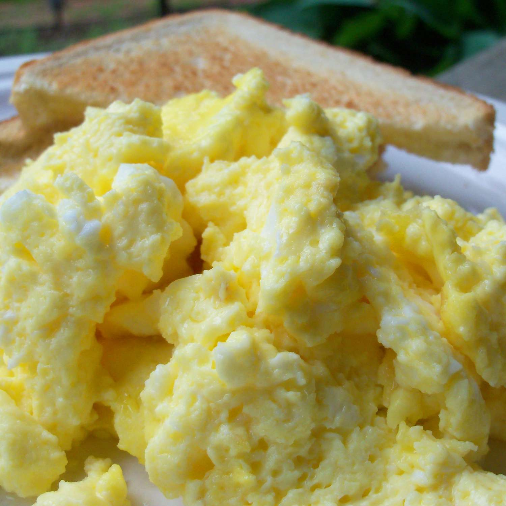

Scrambled Eggs

Description
Scrambled eggs are the easiest and best way to start the morning. If you want something that's easy to make, filling, and customizable,
then look no further than this winner. With good fats and proteins, you can't go wrong with a heaping pile of this yellow delicacy.
While they are delicious on their own, if you want to take it to another level, feel free to add any of your favorite toppings to maximize
flavor and be able to make different types of eggs all at the same time for different palettes!
Ingredients
- 6 Large Eggs
- 1 tbsp butter
- Pinch of salt
- Pinch of pepper
- Feta Cheese (Optional)
- Salsa (Optional)
Steps
- Beat eggs in a bowl with a pinch of salt and pepper
- Melt butter in a pan over medium heat
- Add egg mixture to the pan, stirring every couple of seconds
- Keep moving the eggs, letting them sit for only a few seconds, until right before the consistency you enjoy
- Take the eggs off the heat
- Add a generous handful of feta cheese and mix into the eggs
- Serve on a plate or bowl, and top with salsa
Back